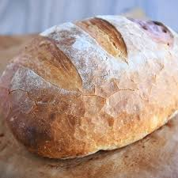

Stuffing

Stuffing, pre-stuffing
Ingredients
- Bread
- Salt + pepper
- Chicken Stock
- Butter
- Garlic
- Carrots + celery
- And onion too
- Sausage
- Herbs if you want
Steps
- let your bread get all stale, or bake it after step 2 if you're in a hurry
- chop bread into cubes
- cook sausage in a dutch oven, then set aside leaving the pork fat in
- chop up carrots and celery into lil bits ooh and onion too.
- cook them babies down till they're translucent. add some garlic.
- pop your bread cubes in there
- heat your chicken stock up in a pot starting like 15 mins ago
- ladle stock one scoop at a time into the bread risotto style
- mix that baby up keeping an eye on the consistency
- when its like halfway where you want it add a couple pats of buttter and the sausage back in
- keep on scooping broth and mixing that pudding
- when its like 90% done add some salt and pepper to taste
- if ur a lil freak let the moisture on the bottom boil off and let it get a lil crust
- oh add some herbs like sage sage is important. ideally w the sausage so everything is sagey
- eat in a bowl or on a plate w a fork or a spoon w/e u like